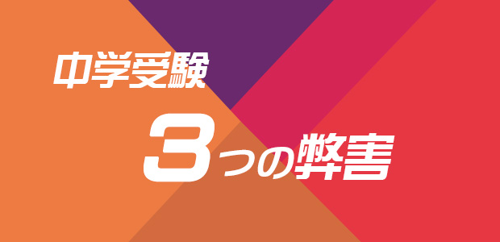

前回（ちょっと待った！ 安易な中学受験は子どもをダメにする！）に引き続き私立中受験の弊害について書きます。
まぁ、中学受験のマイナス点は色々あるのですが一番問題なのは生徒自らが本当に受験したいのか、本当は親が受けさせたいだけではないかという点。
つまり中学受験は遊びたい盛りの子どもが自主的、主体的に選択したものではないということ。これが一番の問題点だと感じます。
高校受験や大学受験は義務教育ではないから、入学するには入学資格が問われるのは当然で、生徒たちも受かるためには受験勉強を頑張るしかない。
その結果（合否）は自己責任で受け入れるしかないと割り切ることができます。
中3（15歳）くらいになると受験勉強の必要性も困難（つらさ）も十分理解するし、万一不合格になっても色々反省し次のステップに活かす知恵もあります。
要するに受験も一つの客観的な体験とみなすことができるわけです。
彼らは受験の成否と人格は関係ないこと。受験勉強は合格するための手段であって興味関心のおもむくままの勉強とは性質が違うことなども理解しています。
さらに合格するためにはつらいこと（困難）を必要とし、だからこそ達成感も得られることなど、いわば人生の教訓を学ぶことも珍しくありません。
私はこれまで4千人以上の受験生を指導してきましたが高校受験は確かに15歳の子どもたちにとって、大切な成長のきっかけになり得ることを実感しています。
ところが12歳の小学生にとっては中学受験とりわけ私立中のそれは、高校受験のように「割り切った体験」とすることはできません。
それは前回にも詳しく話した通りです。元々主体的に選んだことはないので当然です。勉強の意味を分からない早い時期の挫折体験は勉強に対するトラウマとなってその後の人生を苦しめます。
というのも私立中学受験はご存知のように重箱の隅をつつくような奇問や珍問が多く、覚えるべき知識量も半端無く遅くとも小4・小5から、早ければ小2・小3から始めなければ間に合いません。
その勉強法は学習の背景や原理的説明を抜きに、一方的に問題の「解き方」をつめこむものなので、深く考える力や「なぜという疑問」をはさむ余地はありません。
記憶力が良い子、頭の回転の早い子は適応しやすいが、理解するのに時間がかかる子や納得しないと思考を先に進められないタイプには向いていないと言えます。
しかし私の経験では、理解に時間をかけ深くゆっくり考える子の方が本当の意味で伸びる子が多いのです。
結局のところ、膨大なパターンを暗記しスピーディに処理する能力が求められる私立中受験勉強それ自体、物事の本質まで掘り下げて考える力を奪いかねない。そこに大きな問題があるということです。
私立中受験3つの弊害
以下に安易な私立中受験がもたらす弊害をまとめてみます。
その① 勉強が表面的になりやすい
膨大な量のパターンを覚え条件反射的に処理することに追われ、背景や本質を深く考えたり「ナゼ？」という疑問を持つ姿勢が育たない。
本当はこういうことが勉強の醍醐味なのに受験テクニックに特化することで「答えさえ合っていれば良い」という刹那的な勉強観に染まってしまう。
その② 受験という外発的動機づけは継続的な勉強意欲を育てない
受験という短期的な目標は一時的にはパワフルなモチベーションになるが、受験が終わると熱は一気に冷める。
特に不合格になった場合のトラウマはその後「試験」恐怖症の原因となり、高校大学受験時に勉強意欲が消失しやすい。
親の中には中学では私立に入ればその後は「苦労せずに」エスカレーターと考えている人も多いがとんでもない誤解である。
大学生や社会人になっても勉強に対するポジティブな感情を持てず、学習意欲の欠けた人間になる可能性があり、私はそのようなタイプをたくさん見てきた。
長い人生を考えると、特にこれからの時代常に新しいことを学ぶ継続的な勉強意欲は絶対必要。
「小6にピーク」が来て後は下降線という事態は望ましいものではない。
親のあまりに近視眼的な価値観は子どもの人生を大きく損なうことを今一度考えて欲しい。
その③ 勉強とはテスト勉強であると思い込んでしまう
当たり前だがテストには正解がある、つまりテスト勉強イコール勉強と思い込むことは、問題には常に正解がありそれを答えることがすなわち勉強ができること、優秀であることだと考えてしまう。
しかしそうだろうか。考えてみたら分かることだが社会に一歩出ればあらかじめ答えの決まっている問題など何一つない。少なくともただ一つの正解などどこにもない。
そして最近は大学入試だけでなく高校入試でも「正解のない問い」をあえて課す問題が増えている。（事実、2020年からの大学入試改革では「正解が一つとは限らない」ことがメインテーマとなっている。）
正解ではなく、プロセスやどのような提案をすべきか、日頃から物事の本質をよく考える習慣を見る問題が多い。
この傾向は益々強まるだろう。
設問に必ず正解ありきの私立中受験勉強のような予定調和の学習法は早晩行き詰まってしまうだろう。
親は「子どもの将来にとって何が善か」を考えよう
以上私が安易な私立中学受験に反対する思いを述べてきました。
人の価値観は様々です。子どもに中学受験をさせることが悪とはいえません。公立とは違ったキメ細かいサービスや設備があり、私立には建学の精神に基づく教育理念もあります。
私立中に進んで素晴らしい体験や多くの友を得て楽しく有意義に過ごす人たちもたくさんいますし、そういう人を知っています。
ただ、私立中入試のために費やすエネルギーの膨大さとその後に続くトラウマを抱えた子が想像以上に存在することもまた事実なのです。そう考えると費用（エネルギー）対効果は高くないと言えます。
そして何よりも問題なのは、こういう「事実」を知らずに、私立の方が何となく公立より良さそう。オシャレな感じだとかセレブな雰囲気だとか、流行に流されて子どもを私立中受験に駆り立てている親の意識だと思います。
前回も述べましたが、単純に「私立の方が公立より上」というのはあまりに浅はかな印象論に過ぎません。
また「中学受験した方が高校受験など後で苦労しないで済むから楽」という親もいますが、これまた前回述べたように少しも楽になどなっていない現状を分かっていません。
私がこのように「中学受験」批判を繰り返しているからというわけではないでしょうが、近年増える一方だった中学受験希望者がこの2,3年頭打ちになっているようです。
2007年をピークに減少を続けてきた首都圏の私立中学受験者数は今年さらに減少、中学受験バブルはまさしく崩壊の状況にある。…参考：「私立中学受験バブルは崩壊 私大付属も中下位校も大幅減」 DIAMOND online（ダイヤモンド社のビジネス情報サイト）
これは「子どもの将来にとって何が善か」を冷静に考える親が増えている証だと思います。
少子化によって早くから優秀な生徒を囲い込みたい私立中学校と、公立よりステイタスが高いと感じている親、そしてそこにビジネスチャンスを見出している学習塾。これら3者が一体となって過熱させてきた「中学受験」という名の商品。
その価値がいまゆらぎ始めたのだとしたら、世間もようやくその「実態」に気づき出したといえるのかも知れません。